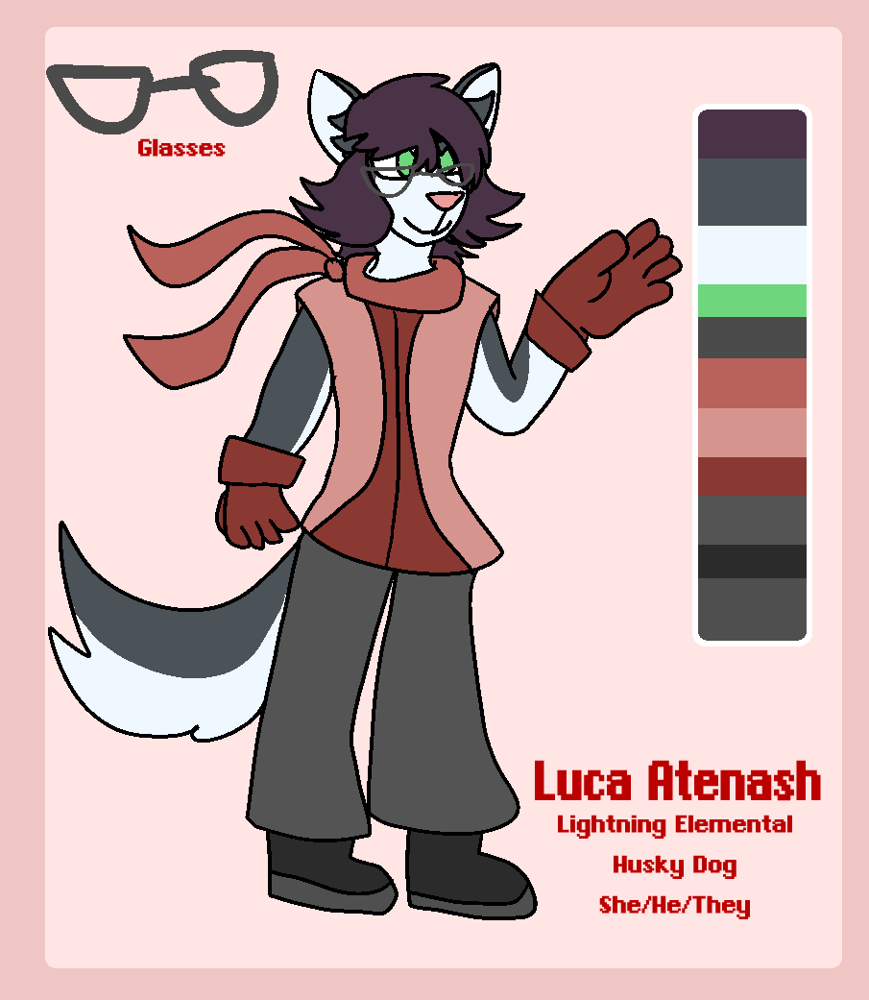

Luca Atenash
she/he/they | husky | lightning elemental

art placeholder
FULL NAME // Luca Atenash
PRONOUNCIATION // Loo-cuh Ah-ten-ash
AGE // 21 (Arc 1), 26 (Arc 2), 38 (Arc 3)
PRONOUNS // She/He/They
SPECIES // Canine (Husky)
AFFILIATION // Main Party
ABILITIES // Ranged weaponry, Lightning elemental magic, high intelligence
ALLIES // Leena, Aera, Darius
ADVERSARIES // The Guardian, Xenia
One half of the Twins.
Aera's best friend since early childhood; the two got into quite a bit of mischief together.Luca is a quick learner, with a sharp wit. They enjoy reading up on myths, legends and history, and can often be found scouring outside the village grounds in search of artifacts.
They harbor an affinity for technology, and their favorite types of "artifacts" are actually any sort of evidence of historical machinery.
Luca believes they were born to an inventor and his wife, in the small village where they spent their days. However, time proves much to the contrary as they discover Aera's new friend may not be all she seems. Over the course of their adventure, Luca discovers their relationship with Leena goes deeper than friendship, and that the two harbor dark secrets about the World's history...
Their magical affinity is lightning."insert Luca quote here once scripting is done..."